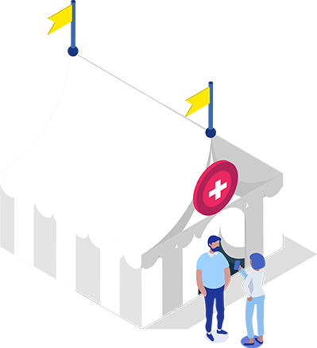
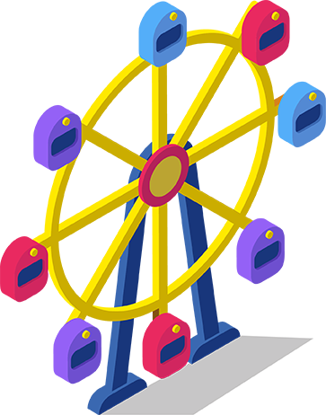
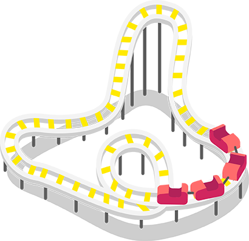
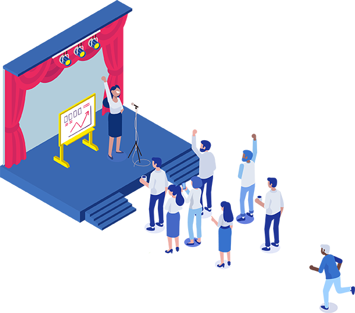
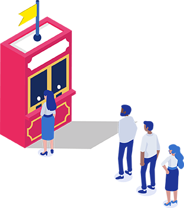

The All-In-One Solution for Essential Connections.
In our rapidly changing world, managing today’s work while preparing for an uncertain tomorrow can feel like a wild ride. GoTo has all the business communications and IT support essentials you need to keep your business up and running. Explore how our all-in-one solution makes it easy for your employees and customers to stay connected and feel supported.




